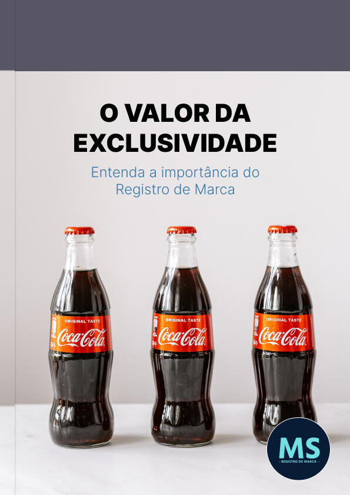
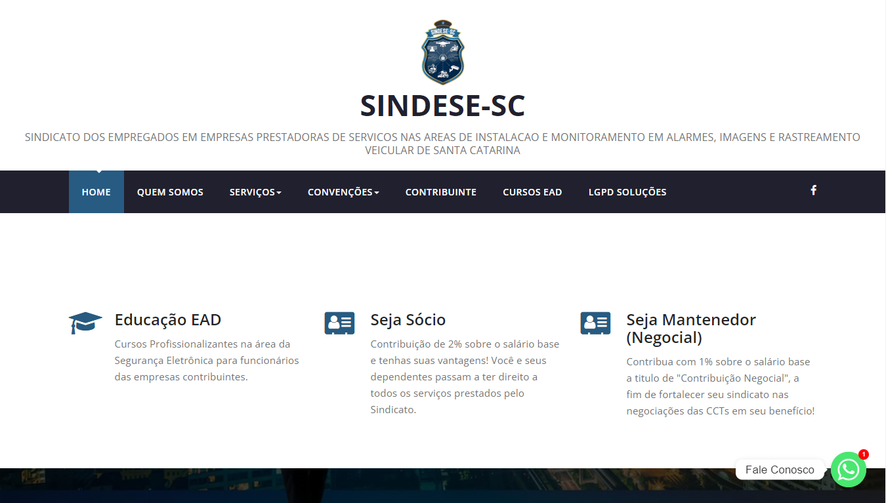

Sobre Mim
Olá, Me chamo Marcos Damas Anacleto. Estudo análise e desenvolvimento de sistemas pela Uninter, tenho certificação em UX Designer para Google. Sou marido do Murilo e pai orgulhoso de três filhos: Luiza, Lucas e João Vitor. Como me descrever? Sou apaixonado em manifestar propósitos que promovem a transformação do mundo, posso ajudar você com escrita persuasiva, criação de e-books, geração de insights sobre negócios, prototipagem, pesquisa e analise de sistemas e produtos digitais.
Formação Acadêmica
- Operador de Computador - 2017 - Instituto Federal de Santa Catarina
- Programador de Computador 1 - 2019 - Instituto Federal de Santa Catarina
- Fundador da Sharkcode primeira Empresa Junior do IFSC Tubarão - 2021 - Instituto Federal de Santa Catarina
- Certificação em UX Designer - 2023 - Google
- Superior em Análise e Desenvolvimento de Sistemas - 2025 - Uninter
Portfólio
E-BOOK
Você já se perguntou por que a Coca-Cola é inconfundível? Vamos revelar como o simples ato de registrar uma marca foi o ingrediente mágico por trás do sucesso estrondoso da Coca-Cola.
Site institucional
Desenvolvi em 2018 um site institucional para a SINDESE-SC, com uma proposta de ser um asservo para registrar as convenções realizadas em pró da categoria.
Contato
Email: marcosd.anacleto@gmail.com
Whatsapp: (48) 99156-3526